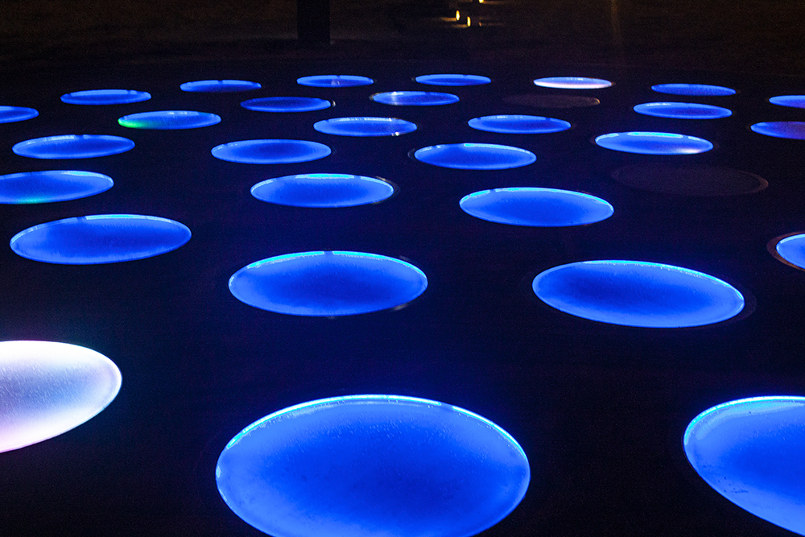

관람을 마치고 나가면서 포토북을 받았다. 네이버 예약으로 오면 준다고 한다. 팔기도 하는 것 같다. 포토북에는 작가들의 작품사진과 작품설명, 설치된 장소도 나온다. 우리나라 말고 다른나라에 있는 작품들도 나와서 다양하게 볼 수 있다.
제주도는 생각보다 저녁에 갈만한 곳이 없었다. 나는 밤에 특별하게 볼 수 있는 곳을 가고 싶었고 열심히 서치한 결과 ‘제주 라이트 아트 플래쉬’ 라는 전시를 발견했다. 리뷰나 평점도 너무 좋았고 블로그에 올라오는 반짝거리는 사진들을 보니 안 갈 수가 없었다.
상시 방문가능하다. 다만 하절기와 동절기에 따라 운영시간이 조금 달라진다. 나는 2020.1월 17일에 방문했다.
시즌 1 : 6월 01일 ~ 09월 30일
09:00~24:00 (야간운영 시간 18시부터~24시까지)
시즌2 : 10월 01일 ~5월 31일
09:00~23:00 (야간운영 시간 17시부터 ~23시까지)
제주특별자치도 제주시 조천읍 선흘리 600-6 / 도로명 주소는 : 제주특별자치도 제주시 조천읍 선교로 115-1
출처 : 제주라프(Light Art Flash)
- 자가차량
(1) 제주공항 출발
1132번 일주도로 시청방면 진행 - 화북동 입구에서 97번 번영로 봉개방면으로 진행 - 거문오름 입구에서 선흘방면 진행 약 10분
(2) 서귀포 출발 - 1132번 일주도로 - 1118번 남조로 또는 97번 번영로 - 제주시방면 진행 - 거문오름입구에서 선흘방면 진행 약 10분
- 대중교통
제주국제공항 - (101번 버스이용) 함덕환승정류장(함덕해수욕장)- (704-1/704-3번 버스) 다희연 정류장 하차
- 주차안내
수용가능 버스(대) : 30대 / 승용자(대) : 100대
주차비 무료, 전기차 충전 가능
너무 어두울 때 보다 적당히 해가 질때쯤 도착하는게 좋다고 한다.
나는 버스가 빨리 끊겨서 택시를 타고 이동했다.
매표소 바로 앞에 버스 정류장이있기 때문에 시간만 맞으면 편하게 갈 수 있다.
나는 자주 애용했던 네이버 예약을 사용했다. 야간입장권으로 성인은 10,500원에 예약 할 수 있다.
입장은 매표소에서 예매를 확인하고 도와준다. 야광팔찌를 하나씩 주는 것 같다. 야외로 나가려면 실내를 지나게 되어있는데 실내에는 족욕체험을할 수 있는 공간과 작은 기념품샵이있고 나가기 직전의 벽 한쪽에는 작가와 작품 설명이있다. 읽어보고 나가면 좋을 것 같다. 아래는 내가 찍은 사진들이다. 밤이고 라이트 아트라서 사진을 찍으면 많이 흔들린다. 정말 좋은 사진을 찍고 싶으면 카메라와 삼각대를 가져가야한다.
관람을 마치고 나가면서 포토북을 받았다. 네이버 예약으로 오면 준다고 한다. 팔기도 하는 것 같다. 포토북에는 작가들의 작품사진과 작품설명, 설치된 장소도 나온다. 우리나라 말고 다른나라에 있는 작품들도 나와서 다양하게 볼 수 있다.
제주 라이트아트 페스타는 사진으로 본 것 보다 훨씬 좋았다. 공간도 넓고 작품도 크기 때문에 상당히 압도적이다. 또 제주도 자연 속에서 전시를 즐길 수 있고 평소에는 보기 힘든 수많은 별들도 볼 수 있다. 친구, 애인, 가족 누구와 와도 좋을 것 같다. 색다른 경험을 하고 싶고 밤에 특화된 전시를 보고싶다면 딱이다. 나는 너무 만족했고 다음에 다른 작품이 들어오면 또 방문하고 싶다.
여기 나오는 시간은 ‘제주 라이트아트 페스타’를 기준으로 걸리는 시간이다.
-선녀와 나무꾼
차로 2분, 버스로 13분 정도 걸린다. 우리나라 옛 시절을 컨셉으로 한 테마파크이다.
-동백동산
차로 5분, 버스로 15분 정도 걸린다. 동백나무 군락지로 숲길을 걸으며 힐링할 수 있다.
-거문오름
차로 7분, 버스로 30분 정도 걸린다. 천연기념물 제444호로 자연생태계가 잘 보전 되어있다.
-에코랜드테마파크
차로 15분, 버스로 30분 정도 걸린다. 30만평의 곶자왈 원시림을 기차로 체험할 수있다.
-함덕해수욕장
차로 이십분, 버스로 삼십분 정도 걸린다. 백사장과 푸른빛 바다가 아름다운 곳이다.